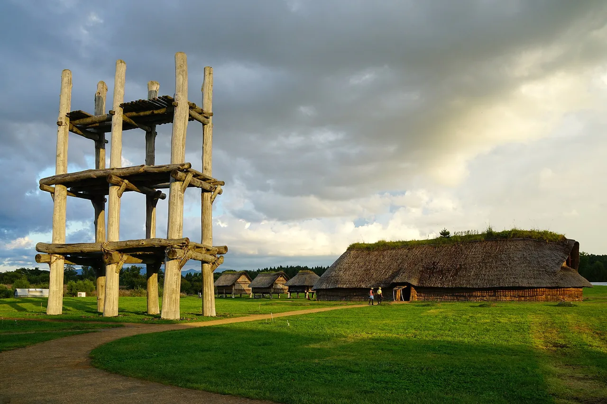

Aomori Guía de viaje para estudiantes de japonés
La región productora de manzanas de Japón en la punta norte de Honshu, famosa por el espectacular festival de verano Nebuta Matsuri.

Aomori se encuentra donde Honshu se encuentra con el mar hacia Hokkaido. Es conocida por sus manzanas crujientes, mariscos frescos y las ruinas de la era Jōmon de Sannai-Maruyama, además de tener algunas de las nevadas más profundas del país.
Qué ver
- Nebuta Matsuri — carrozas gigantes iluminadas cada agosto
- Hirosaki Castle y sus famosos cerezos en flor
- Oirase Gorge y Lake Towada
- Sannai-Maruyama — un sitio prehistórico importante (UNESCO)
Algunos enlaces son de afiliados. Podemos recibir una comisión sin coste adicional para ti. Solo listamos servicios que usaríamos.
Qué comer
Prueba las manzanas, vieiras y atún azul de Ōma.
Cómo llegar y cuándo ir
Cómo llegar: Aproximadamente 3 horas desde Tokio en el Tōhoku Shinkansen hacia Shin-Aomori.
Mejor época: Principios de agosto para Nebuta Matsuri; finales de abril a mayo para los cerezos en flor de Hirosaki.
Reserva el alojamiento con meses de anticipación si visitas durante Nebuta (2–7 de agosto).
Algunos enlaces son de afiliados. Podemos recibir una comisión sin coste adicional para ti. Solo listamos servicios que usaríamos.